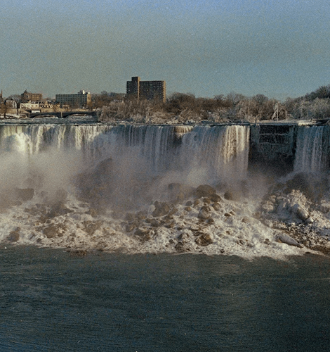
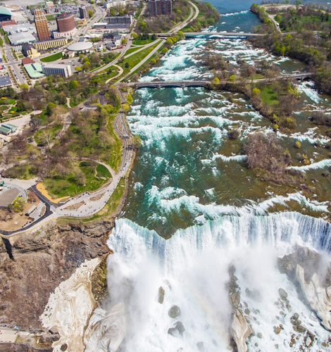
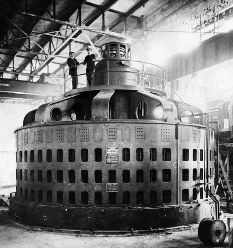

NATIONAL GEOGRAPHIC
In 1969, the U.S. turned off Niagara Falls. Here’s what happened next.
HISTORY & CULTURE
- 
- 
- 
In the summer of 1969, America brandished its mastery over nature, landing a man on the Moon. Closer to home and perhaps to Americans’ hearts it shut off Niagara Falls.
After major rock collapses in 1931 and 1954, house-sized boulders had built up at the base of the American side of the falls, halving its original vertical drop and prompting concerns that the mighty natural marvel would eventually crumble into one long rapids. In 1965, a local newspaper declared Niagara Falls “an incurably ill loved one,” and subsequent outcry prompted Congress to authorize the U.S. Army Corps of Engineers Corps to study potential renovations to the diminishing natural wonder. The Corps promptly built a cofferdam that diverted the Niagara River over Horseshoe Falls on the Canadian side, shutting off the American Falls completely for diagnosis.
To tourists flocking to Niagara Falls, NY in the summer of 1969, the 100-foot-high dry cliff they encountered instead of the world’s most famous waterfall was stunning proof of American mastery over nature. But it was far from the first time that engineers had attempted to “fix” Niagara Falls since the late 19th century the Corps and Canadian engineers have continuously tweaked the two cataracts to balance opposing goals: harnessing power and maintaining natural beauty. Today, up to three quarters of the Niagara River runs beneath the falls on both sides of the U.S.-Canada border via massive tunnels to hydroelectric plants, rather than over the towering brinks. Which raises a big question: Is Niagara still worthy of the title “natural” wonder? Or are the falls just a particularly pretty spillway for the hydropower complexes that line Niagara’s shores?
Wilderness becomes industry
First Nations and Native American tribes have lived around Onguiaahra, “the strait,” for at least 10,000 years, and Niagara’s sublime power struck the hearts of the first non-Indigenous explorers (who anglicized the Iroquian name) with a mixture of awe and fear. But where romantics saw beauty, industrialists saw profit. By the mid-1800s, factories and mills had sprung up at the base of the falls on both sides of the international border. In the 1880s, hydroelectric generation was proven at scale for the first time at Niagara and Niagara Falls quickly became global industrial center, according to Daniel Macfarlane, an environmental historian and author of Fixing Niagara Falls.
These developments dismayed Frederick Law Olmsted, the landscape architect who’d designed Central Park in New York City. With Frederick Church, the painter whose depictions of Niagara helped make the falls an American icon, he launched the Free Niagara conservation movement which succeeded in pushing factories away from the base of the falls on both sides of the river.
The first renovations
In 1885 the Olmsted-designed New York State Reservation at Niagara was made the country’s first state park, and quickly became a popular place for tourists and honeymooners to gaze on the wild splendor of the American Falls and larger Horseshoe Falls across the border in Canada. But there was a problem: Niagara Falls was losing its thunder. A growing hydropower “arms race” between the two countries upriver meant less water than ever was flowing over the falls on both sides.
After Canada and the U.S. signed the Niagara River Diversion treaty in 1950, they discussed numerous plans including turning Niagara into an “intermittent waterfall” that would only run on Sundays before agreeing to divert no more than half of the Niagara River’s 200,000 cubic feet-per-second natural flow for hydropower during daytime hours during a designated tourist season.
“That means if you were to go to Niagara Falls at Christmastime, or any time in the winter, all you’re seeing is one-quarter of the water going over the waterfall,” Macfarlane tells National Geographic. “The other three quarter is going around [the falls] in diversion tunnels.”
The 1950 treaty also laid out a plan for masking hydropower’s significant impact on the Niagara River and its famous falls. Canadian engineers diverted the river in small sections, blasting and carving the brink of Horseshoe Falls, shrinking it by hundreds of feet to create an unbroken crestline covered by a thin, uniform curtain of water to give the impression of volume. A custom-built “telecolorimeter” helped engineers ensure the falls on the Canadian side remained the right shade of greenish blue. Re-sculpting Horsehoe Fall’s flanks minimized mist, which had been a common tourist complaint.
American preservationists were upset by the geological meddling, but engineers countered by pointing out that Niagara Falls naturally erodes several feet per year anyway—its current location is some eight miles upstream from where water started eating away the Niagara Escarpment about 12,000 years ago.
Comments :
- john Very good
- john Very good
Leave a Reply
Your email address will not be published. Required fields are marked*
Related posts:
-
 Summer storms can strike suddenly. Here’s what causes them.
Summer storms can strike suddenly. Here’s what causes them.For many of us, warmer months are a time to relax, spread out in the warm sun, and maybe have a picnic. But who among us hasn’t experienced the dread of seeing storm clouds form as if out of nowhere
View article -
 How to compost and why it’s good for the environment
How to compost and why it’s good for the environmentAbout a third of the food produced around the world goes to waste, and much of it ends up in landfills where it becomes a source of methane, a greenhouse gas 25 times more potent than carbon dioxide. Eliminating waste
View article -
 This summer's extreme weather is a sign of things to come
This summer's extreme weather is a sign of things to comeTwo-thirds of the way through the year, 2023 seems destined to be remembered as the year that extreme weather events left the Northern Hemisphere reeling.
View article